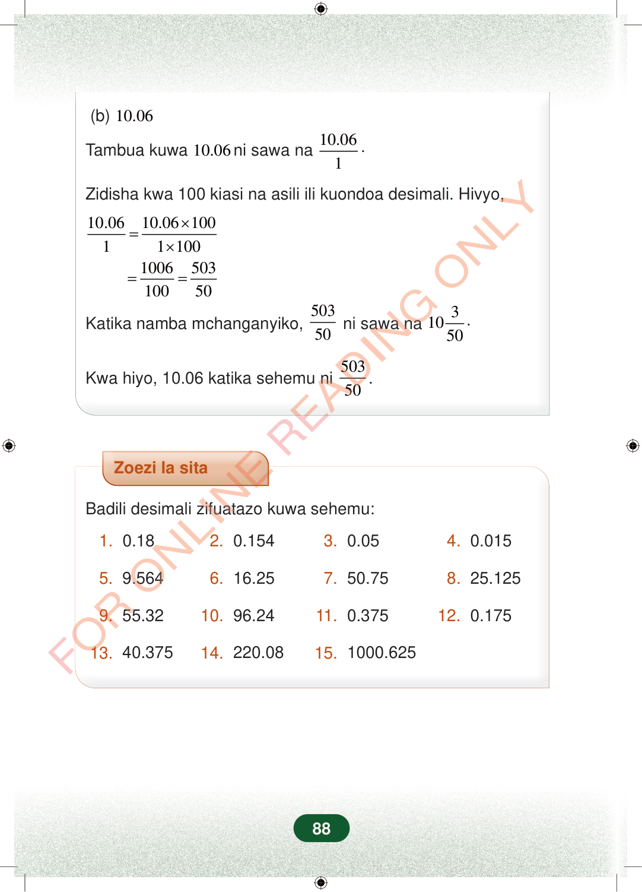

(b)10.06Tambua kuwa10.06ni sawa na10.061.Zidisha kwa 100 kiasi na asili ili kuondoa desimali. Hivyo,×=×==10.0610.0610011100100650310050Katika namba mchanganyiko,50350ni sawa na31050.Kwa hiyo, 10.06 katika sehemu ni50350.Zoezi la sitaBadili desimali zifuatazo kuwa sehemu:1.0.182.0.1543.0.054.0.0155.9.5646.16.257.50.758.25.1259.55.3210.96.2411.0.37512.0.17513.40.37514.220.0815.1000.62588
(b) 10.06
Tambua kuwa 10.06 ni sawa na 10.06
1 .
Zidisha kwa 100 kiasi na asili ili kuondoa desimali. Hivyo,
× = ×
10.06 10.06 100 1 1 100 1006 503 100 50
Katika namba mchanganyiko, 503
50 ni sawa na 3 1050 .
Kwa hiyo, 10.06 katika sehemu ni 503
50 .
Zoezi la sita
Badili desimali zifuatazo kuwa sehemu:
1. 0.18 2. 0.154 3. 0.05 4. 0.015
5. 9.564 6. 16.25 7. 50.75 8. 25.125
9. 55.32 10. 96.24 11. 0.375 12. 0.175
13. 40.375 14. 220.08 15. 1000.625
88
(b) 10.06Tambua kuwa 10.06 ni sawa na<math><mrow><mfrac><mn>10.06</mn><mn>1</mn></mfrac><mi>.</mi></mrow></math>Zidisha kwa 100 kiasi na asili ili kuondoa desimali. Hivyo,<math><mrow><mfrac><mn>10.06</mn><mn>1</mn></mfrac><mo>=</mo><mfrac><mrow><mn>10.06</mn><mo>×</mo><mn>100</mn></mrow><mrow><mn>1</mn><mo>×</mo><mn>100</mn></mrow></mfrac><mo>=</mo><mfrac><mn>1006</mn><mn>100</mn></mfrac><mo>=</mo><mfrac><mn>503</mn><mn>50</mn></mfrac></mrow></math>Katika namba mchanganyiko,<math><mfrac><mn>503</mn><mn>50</mn></mfrac></math>ni sawa na<math><mrow><mn>10</mn><mfrac><mn>3</mn><mn>50</mn></mfrac><mi>.</mi></mrow></math>Kwa hiyo, 10.06 katika sehemu ni<math><mrow><mfrac><mn>503</mn><mn>50</mn></mfrac><mi>.</mi></mrow></math>Zoezi la sitaBadili desimali zifuatazo kuwa sehemu:1. 0.182. 0.1543. 0.054. 0.0155. 9.5646. 16.257. 50.758. 25.1259. 55.3210. 96.2411. 0.37512. 0.17513. 40.37514. 220.0815. 1000.625